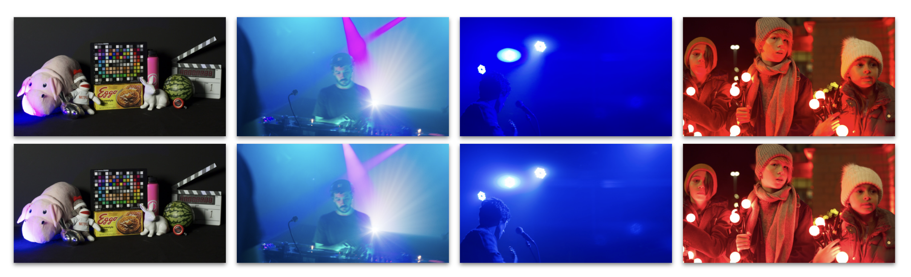
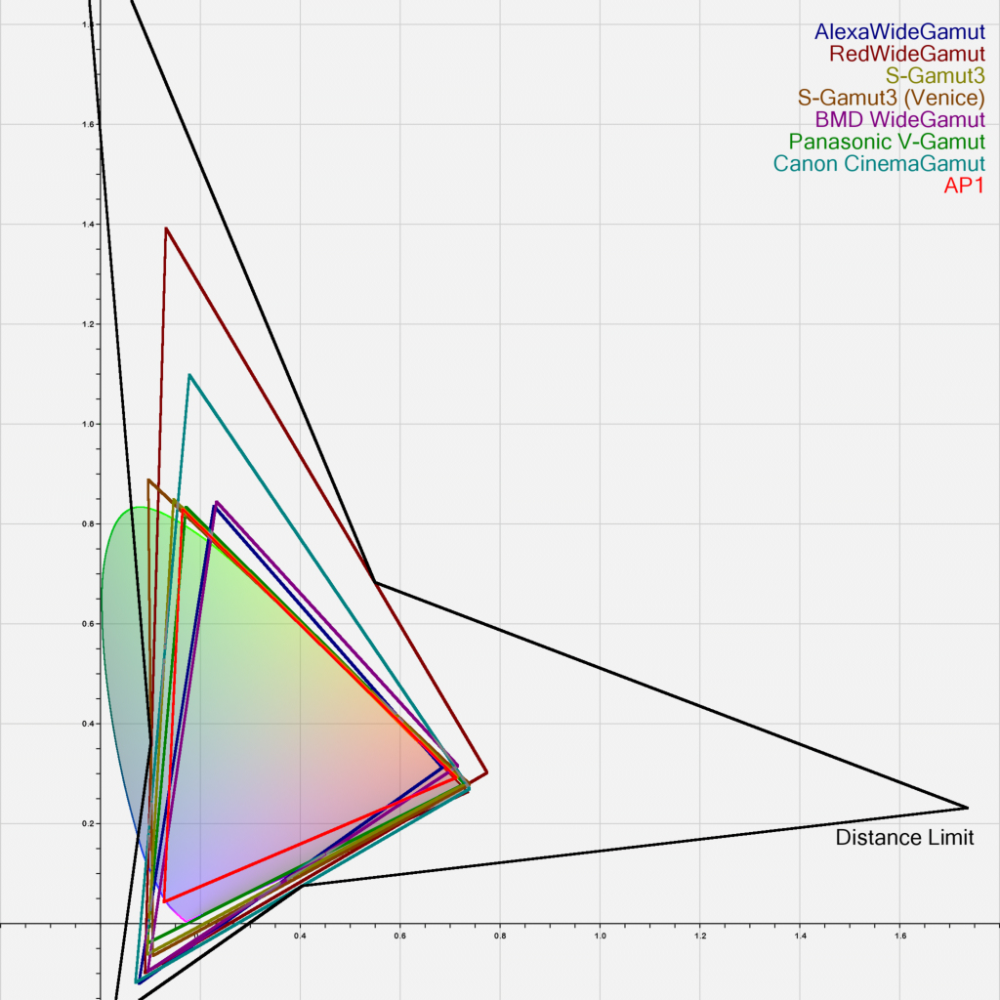
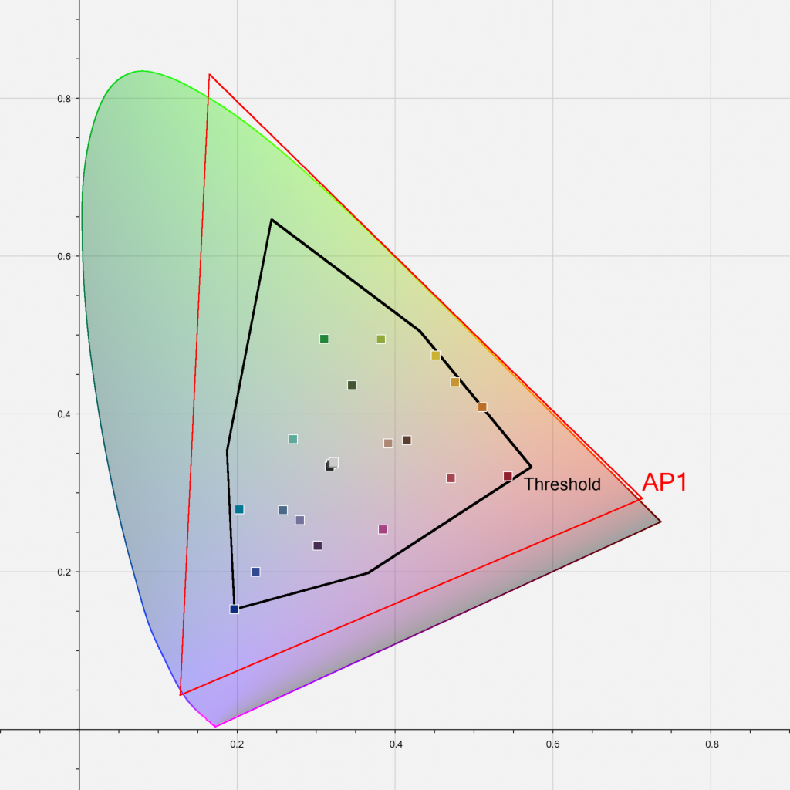
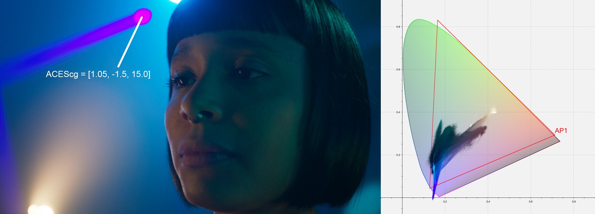
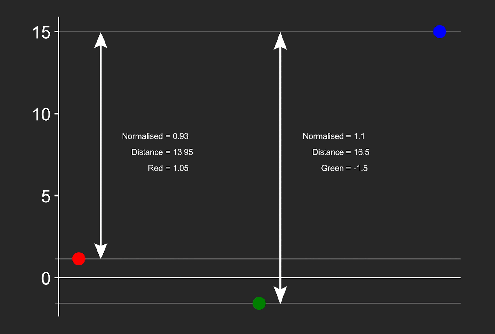
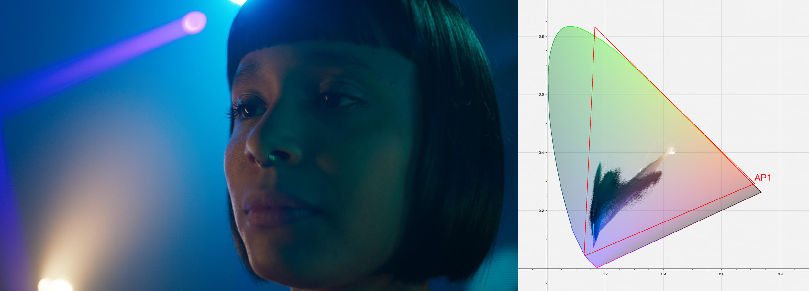

Reference Gamut Compression (RGC) - A Look Transform to bring pixel values within AP1¶
Scope¶
This document introduces a Reference Gamut Compression (RGC) operator, published in ACES 1.3, which may be applied to ACES image data to “heal” pixel values outside the AP1 gamut. The Reference Gamut Compression algorithm is intended to replace the Blue Light Artifact LMT, which is now deprecated.
References¶
The following standards, specifications, articles, presentations, and texts are referenced in this text:
- ACES Gamut Mapping Architecture VWG - Technical Documentation Deliverable
- ISO 17321-1:2012 - Colour characterisation of digital still cameras (DSCs) - Part 1: Stimuli, metrology and test procedures
- RP 177:1993 - SMPTE Recommended Practice - Derivation of Basic Television Color Equations
- S-2014-004: ACEScg — A Working Space for CGI Render and Compositing
Introduction¶
A common complaint from users of ACES has been the artifacts resulting from out of gamut values in source images. These artifacts are most known for appearing in highly saturated, bright LED light sources such as police car lights, stoplights, etc - but also appear frequently in LED sources used to light scenes. In an ACES workflow, these artifacts appear at two stages - first in the conversion from camera raw RGB via an Input Transform (IDT) into ACES AP0 - and second in the conversion from ACES AP0 into ACES AP1 (ACEScg and ACEScct). These out of gamut pixel values are problematic when their negative components cause issues in compositing, and may also produce visual artifacts when viewed through an ACES Output Transform.
A Look Modification Transform (LMT) referred to as the blue light artifact fix was created as a temporary solution, but this affected all pixels in the image, rather than just the problem areas. A new solution was needed which preserved colors within a “zone of trust”, only altering the most saturated values.
Specification¶
ACEScg values within the AP1 gamut are positive. Values outside of the AP1 gamut are negative in one or two of their components.
The gamut compression algorithm runs per-pixel.
ACES RGB values shall be converted to gamut compressed ACES RGB values using the following steps.
Step 1 – Convert ACES 2065-1 RGB to ACEScg RGB¶
ACES 2065-1 RGB values shall be converted to ACEScg RGB values using the transformation matrix (\(TRA_1\)) calculated and applied using the methods provided in Section 4 of SMPTE RP 177:1993.
Note
Equation 1 shows the relationship between ACES R, G, and B values and ACEScg RGB values. NPM, rounded to 10 decimal places, is derived using the color space chromaticity coordinates specified in SMPTE S 2065-1, Academy Specification S-2014-004, and the methods provided in Section 3.3 of SMPTE RP 177:1993.
Step 2 – Calculate A¶
Calculate \(A\) using Equation 2.
where:
\(\textrm{MAX()}\) returns the maximum of the arguments
Note
A is used as representative of the achromatic value of the pixel.
Step 3 – Calculate dn¶
Calculate \(d_n\) using Equation 3.
where : \(\textrm{ABS()}\) returns the absolute value of the argument
Note
\(d_n\) represents the normalized distances of the channels from the achromatic, or “inverse RGB ratios”.
Step 4 – Calculate dc¶
Compress \(d_n\) to produce \(d_c\) using Equation 4.
where :
Note
The compression function compresses values at limit (\(l\)) to 1.0. This results in values beyond this limit remaining outside AP1 after compression. A function which compressed all values to within AP1 would require a significant proportion of the space between threshold (\(t\)) and 1.0 to be reserved for values which are highly unlikely to occur, thus compressing other values more than necessary. Limit (\(l\)) values have been chosen so that the encoding gamuts of all digital cinema cameras with official ACES IDTs (ARRI, RED, Canon, Sony, Panasonic) will compress to within AP1. Threshold (\(t\)) values have been derived from the boundary of the ACEScg values for the ColorChecker Classic 24 (as specified in ISO 17321-1). The exponent (\(p\)) has been set to an average value, chosen following user testing, since there is no objective measure of the correctness of this value.
Step 5 – Calculate RGBc¶
Calculate \(RGB_c\) using Equation 5.
where : \(\textrm{ABS()}\) returns the absolute value of the argument
Step 6 – Convert RGBc to ACES2065-1 RGB¶
Gamut compressed ACEScg RGB values (\(RGB_c\)) shall be converted to ACES2065-1 RGB values using the transformation matrix (\(TRA_2\)) calculated and applied using the methods provided in Section 4 of SMPTE RP 177:1993.
Note
Equation 6 shows the relationship between ACEScg R, G, and B values and ACES2065-1 RGB values. NPM, rounded to 10 decimal places, is derived using the color space chromaticity coordinates specified in SMPTE S 2065-1, Academy Specification S-2014-004, and the methods provided in Section 3.3 of SMPTE RP 177.
Gamut Decompression¶
While the Reference Gamut Compression has a closed form inverse, its use is not normally recommended.
Gamut compressed ACES RGB values may be converted back to the original ACES RGB values using the same steps as for compression above, but using Equation 4b in place of Equation 4.
Note
\(l\), \(t\), \(p\), \(s\) and \(d_p\) are as defined in Equation 4.
Tracking¶
The Reference Gamut Compression is defined as a Look Transform (LMT) in CTL and has the following ACES Transform ID:
<ACEStransformID>urn:ampas:aces:transformId:v1.5:LMT.Academy.GamutCompress.a1.3.0</ACEStransformID>
This is trackable via a lookTransform element in an AMF file. If the RCG is used in the viewing pipeline, the lookTransform will be listed in the associated AMF. If the AMF is accompanying rendered media, the applied flag should be used to track whether or not the RGC has been “baked in”.
If using the RGC in a viewing pipeline, this lookTransform should appear directly after the IDT, first in the list of any LMTs, to make sure other operations benefit from the gamut compression.
The Transform ID should be included in any exported AMFs, with the applied flag set as appropriate, and the description set to the ACESuserName to enable proper tracking. Currently, only the Reference (i.e. static) Gamut Compression is trackable via AMF.
Appendix A - History / Research¶
The Architecture Virtual Working Group, chaired by Carol Payne (Netflix) and Matthias Scharfenberg (ILM), to investigate gamut mapping in ACES began its work in January 2020, with a proposal outlining the main issue as:
Users of ACES are experiencing problems with out of gamut colors and the resulting artifacts (loss of texture, intensification of color fringes). This issue occurs at two stages in the pipeline.
- Conversion from camera raw RGB or from the manufacturer’s encoding space into ACES AP0
- Conversion from ACES AP0 into the working color space ACES AP1
It was acknowledged early on in the group that this artifacting can also occur in VFX/Color grading, as well as the Output Transform stages in the pipeline.
The working group chairs set the scope:
- Propose transforms between color spaces that avoid or reduce color clipping. Solutions for this may include:
- Proposing a suitable color encoding space for digital motion-picture cameras.
- Proposing a suitable working color space.
- Propose a suitable gamut mapping/compression algorithm that performs well with wide gamut, high dynamic range, scene referred content that is robust and invertible.
The group started out investigating the working and encoding spaces (ACES 2065-1 and ACEScg). However, it was agreed early on that although the possibility of creating a new ACES working space which mitigates common gamut issues should not be discounted, it would require a very strong case as to the benefits. Changing a core component of ACES would potentially introduce backwards compatibility issues, and would also be based only on the situation at the current time. It raised the possibility of having to change the working space repeatedly in future. Thus, the focus moved on to the third option - a suitable algorithm to solve the artifacting while maintaining as much of the current ACES standards and structure as possible. The gamut mapping approach chosen is one of compression. It deals with the ACES image data “as is”, and simply strives to convert that into less problematic image data.
Based on the history above, the general working assumptions were:
- Samples are relative scene exposure values (i.e. scene-referred linear data) with no assumed min/max value range boundaries
- The gamut mapping operator is per-pixel only (i.e. not spatial or temporal)
The stated ideals for a gamut compression algorithm were:
- Exposure invariance — \(f(a \cdot RGB) = a \cdot f(RGB)\)
- Source gamut agnosticism
- Monotonicity
- Simplicity – suited to a fast shader implementation
- Invertibility (see caveats in Appendix II)
- Colors in a “zone of trust” will be left unaltered
While a suitable algorithm should be able to map arbitrary gamut A into arbitrary gamut B, it should not be a requirement that all source data must be contained within gamut A. Nor is it necessarily a requirement that the output should be entirely bounded by gamut B. Indeed, allowing extreme source values to be mapped to output values close to, but not within, the target gamut means that the compression function does not need to tend to the horizontal at the boundary. This means that its inverse will not tend to the vertical, which is beneficial for invertibility.
Because the unreal colors which occur are a result of the mismatch between a camera and human observer (among other causes) and are outliers in the residual error of a transform optimized for a subset of important “memory” colors, what they “should” look like is somewhat undefined. The important thing is to remap them into values which are plausible rather than “accurate”.
What was determined to be outside the scope:
- Colorimetric accuracy or spectral plausibility of input device transforms (IDTs)
- Display gamut mapping. (Required modifications to the RRT/ODT will need to be addressed by a subsequent group.)
- Customizing for specific input/output gamuts
- Working in bounded or volume-based gamuts
- Actions which could limit creative choices further down the line (e.g. excessive desaturation)
User Testing¶
Once the working group settled on the baseline algorithm and its properties a set of targeted, small scale user tests were conducted to ensure the foundations of the work were solid. The testing was composed of two groups - VFX compositors and colorists. Between these two disciplines every major use case for the gamut compression algorithm could be tested and measured. The group gathered an open repository of test images that clearly exhibited the problem to be solved. It then derived a set of test scenarios for each group ranging from keying, blur, grain matching, hue adjustment, and more. The tests were conducted in Nuke and Resolve, on both SDR and HDR monitors.

Overall, the results of the user testing were positive and uncovered no major issues in the algorithm functionality. 75% of compositors and 96% of colorists stated that using the algorithm helped them complete their work and achieve their creative goals. For full user testing results, please refer to the working group historical repository.
Appendix B – Implementation Considerations¶
Invertibility¶
Invertibility of the transformation is an aspect that was discussed at length. The consensus was that while an inverse transform should be defined it comes with the caveat that gamut expansion can create undesirable results when used with highly saturated pixel values, such as those added as part of graphics or CG rendered imagery As this operation is considered more of a “pixel healing” technical operation, inversion should not be a required part of the workflow. It is more akin to a despill after pulling a key, or a bit of sharpening on a scale operation.
3D LUT Approximation¶
If there is an unavoidable requirement to implement the Reference Gamut Compression on legacy systems using a 3D lookup table (LUT) special consideration must be given to the shaper function. Common functions for implementing ACES transforms as 3D LUTs are the Log2 shaper or ACEScct. However neither of those are designed to cover the negative value range required to map the negative components of out of gamut colors into a normalized 0 to 1 domain. For a successful 3D LUT implementation the normalizing shaper function must also cover a significant range of negative values.
Due to the residual error a 3D LUT approximation of the transform should be considered to be non-invertible.
Systems used as part of the finishing pipeline should use a mathematical implementation of the RGC, rather than a LUT. But for preview purposes, a well constructed LUT may be acceptable, particularly if it is a concatenation of all the required transforms, such as an on-set preview LUT transforming camera log to Rec.709.
Parametric Version¶
Some implementations may also choose to offer a parametric variation of the RGC. This is not officially endorsed as part of ACES, and should be treated simply as another grading operator. It should not be used as a replacement for the RGC since its parameters cannot be tracked by AMF and must instead be stored in the project files of the implementing application.
Suggested parameter names, and default values for a parametric version are given in Section 9 of the RGC Implementation guide.
Appendix C: Illustrations¶




Note that the red value has also been moved slightly, because although it was not negative, its normalized distance was close to 1.0, and beyond the protected threshold for that channel (0.815).


Appendix D: CTL Reference Implementation¶
// <ACEStransformID>urn:ampas:aces:transformId:v1.5:LMT.Academy.ReferenceGamutCompress.a1.v1.0</ACEStransformID>
// <ACESuserName>ACES 1.3 Look - Reference Gamut Compress</ACESuserName>
//
// Gamut compression algorithm to bring out-of-gamut scene-referred values into AP1
//
//
// Usage:
// This transform is intended to be applied to AP0 data, immediately after the IDT, so
// that all grading or compositing operations are downstream of the compression, and
// therefore work only with positive AP1 values.
//
// Note:
// It is not recommended to bake the compression into VFX pulls, as it may be beneficial
// for compositors to have access to the unmodified image data.
//
//
// Input and output: ACES2065-1
//
import "ACESlib.Transform_Common";
/* --- Gamut Compress Parameters --- */
// Distance from achromatic which will be compressed to the gamut boundary
// Values calculated to encompass the encoding gamuts of common digital cinema cameras
const float LIM_CYAN = 1.147;
const float LIM_MAGENTA = 1.264;
const float LIM_YELLOW = 1.312;
// Percentage of the core gamut to protect
// Values calculated to protect all the colors of the ColorChecker Classic 24 as given by
// ISO 17321-1 and Ohta (1997)
const float THR_CYAN = 0.815;
const float THR_MAGENTA = 0.803;
const float THR_YELLOW = 0.880;
// Aggressiveness of the compression curve
const float PWR = 1.2;
// Calculate compressed distance
float compress(float dist, float lim, float thr, float pwr)
{
float comprDist;
float scl;
float nd;
float p;
if (dist < thr) {
comprDist = dist; // No compression below threshold
}
else {
// Calculate scale factor for y = 1 intersect
scl = (lim - thr) / pow(pow((1.0 - thr) / (lim - thr), -pwr) - 1.0, 1.0 / pwr);
// Normalize distance outside threshold by scale factor
nd = (dist - thr) / scl;
p = pow(nd, pwr);
comprDist = thr + scl * nd / (pow(1.0 + p, 1.0 / pwr)); // Compress
}
return comprDist;
}
void main
(
input varying float rIn,
input varying float gIn,
input varying float bIn,
input varying float aIn,
output varying float rOut,
output varying float gOut,
output varying float bOut,
output varying float aOut
)
{
// Source values
float ACES[3] = {rIn, gIn, bIn};
// Convert to ACEScg
float linAP1[3] = mult_f3_f44(ACES, AP0_2_AP1_MAT);
// Achromatic axis
float ach = max_f3(linAP1);
// Distance from the achromatic axis for each color component aka inverse RGB ratios
float dist[3];
if (ach == 0.0) {
dist[0] = 0.0;
dist[1] = 0.0;
dist[2] = 0.0;
}
else {
dist[0] = (ach - linAP1[0]) / fabs(ach);
dist[1] = (ach - linAP1[1]) / fabs(ach);
dist[2] = (ach - linAP1[2]) / fabs(ach);
}
// Compress distance with parameterized shaper function
float comprDist[3] = {
compress(dist[0], LIM_CYAN, THR_CYAN, PWR),
compress(dist[1], LIM_MAGENTA, THR_MAGENTA, PWR),
compress(dist[2], LIM_YELLOW, THR_YELLOW, PWR)
};
// Recalculate RGB from compressed distance and achromatic
float comprLinAP1[3] = {
ach - comprDist[0] * fabs(ach),
ach - comprDist[1] * fabs(ach),
ach - comprDist[2] * fabs(ach)
};
// Convert back to ACES2065-1
ACES = mult_f3_f44(comprLinAP1, AP1_2_AP0_MAT);
// Write output
rOut = ACES[0];
gOut = ACES[1];
bOut = ACES[2];
aOut = aIn;
}